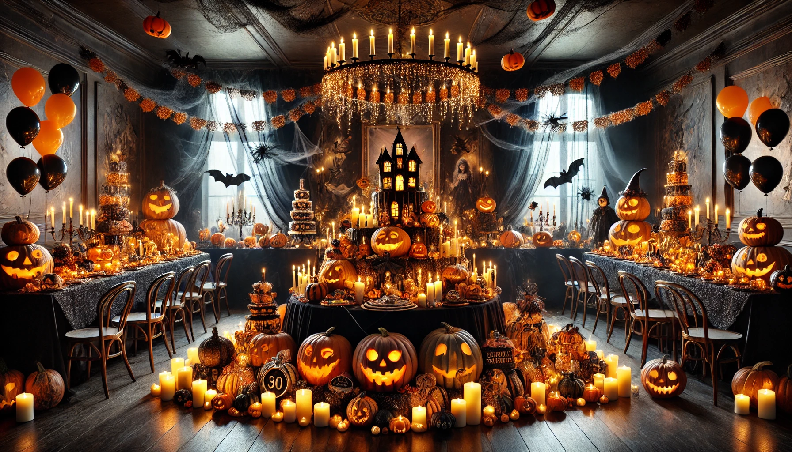
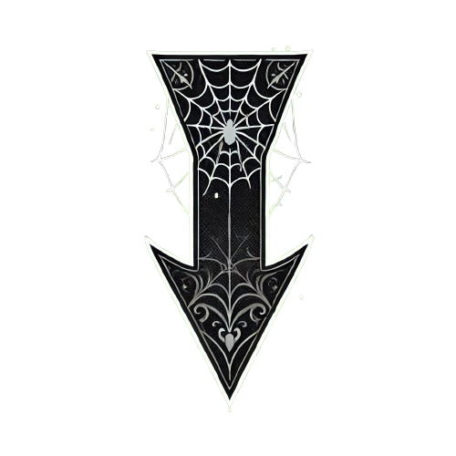
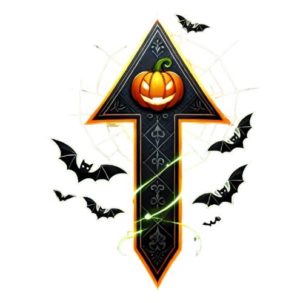
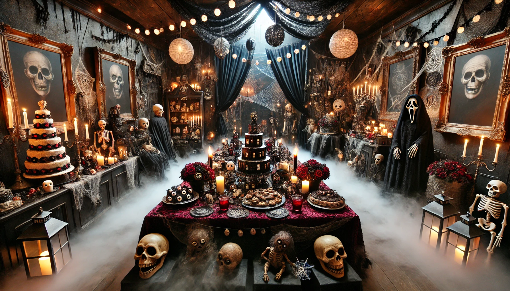
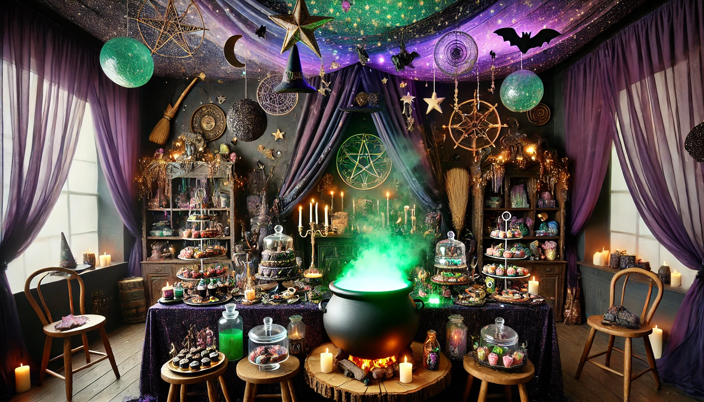
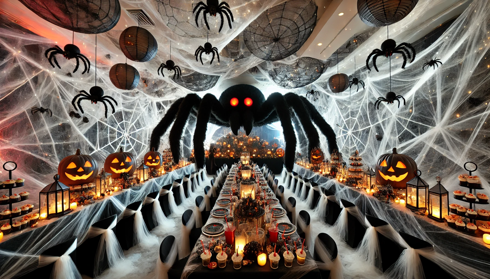

Jack O' Lantern
Welcome to the ultimate Halloween-themed birthday party, where
ghouls, goblins, and glowing jack-o'-lanterns come together to
celebrate! This party is a magical blend of spooky and fun, perfect
for kids, teens, or even adults who want to dive into the Halloween
spirit. Imagine a room draped in eerie decor, with cobwebs hanging
from the ceiling, pumpkins flickering with candlelight, and laughter
echoing through the air as guests enjoy festive games and treats.
The entertainment options are endless! From a DIY jack-o'-lantern
carving station to a spooky photo booth, this party has everything
to keep guests entertained for hours.

This Halloween birthday party is sure to be a hit, offering a
delightful mix of fun, creativity, and just the right amount of
fright!


Haunted House
Step into a world of mystery and chills with this haunted
house-themed birthday party! Imagine the perfect blend of
spine-tingling scares and fun Halloween-themed activities, where the
air is thick with suspense, and every corner of the room holds a new
surprise. This party is designed to create a magical, haunted
atmosphere that's both eerie and exciting, ideal for kids, teens, or
adults who love a good scare with their celebration.
This haunted house party isn't just about the creepy ambiance—it's
packed with fun activities that'll keep guests entertained all
night long.

This haunted house-themed birthday party will leave guests with a
night of thrills, chills, and unforgettable fun. The perfect mix
of eerie decor, fun activities, and spooky entertainment
guarantees a birthday celebration like no other!
Witch's Cauldron
Dive into a world of potions, spells, and bubbling brews with this
enchanting Witch's Cauldron-themed birthday party! Imagine stepping
into a magical realm where witches gather around cauldrons filled
with mysterious liquids, casting spells, and whipping up fun-filled
activities. This party is designed to transport guests into a spooky
yet whimsical atmosphere, perfect for Halloween lovers of all ages.
This Witch's Cauldron party is packed with magical activities and
entertainment that will keep guests enchanted for the entire
celebration.

This Witch's Cauldron-themed birthday party is the perfect blend
of fun, fantasy, and a touch of spooky magic. With bubbling
cauldrons, potions to brew, and spells to cast, it's a bewitching
experience that will leave guests spellbound!
Pooky Pider
Step into a web of spine-chilling fun with this Spooky Spider-themed
Halloween birthday party! Perfect for lovers of all things creepy
and crawly, this party transforms your space into a haunted lair
filled with giant webs, crawling spiders, and eerie decor. Guests
will enjoy creepy activities, delicious spider-themed treats, and
thrilling games that bring the Halloween spirit to life.
This Spooky Spider party offers guests a variety of creepy and fun
activities that will make the birthday celebration a truly
memorable one.

This Spooky Spider-themed birthday party is a perfect mix of
creepy-crawly fun and Halloween thrills, creating an exciting,
memorable celebration for guests of all ages. With its web-filled
decor, thrilling activities, and spider-inspired treats, it's sure
to be a hit with every Halloween enthusiast!